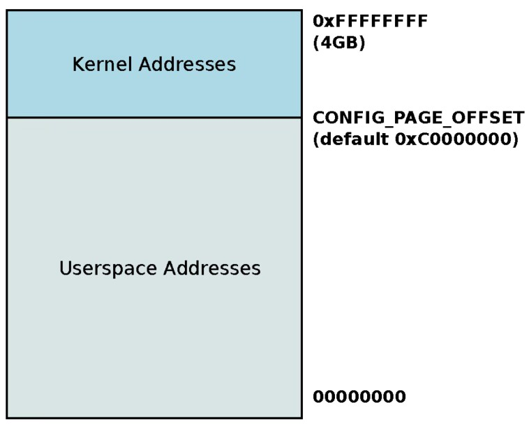
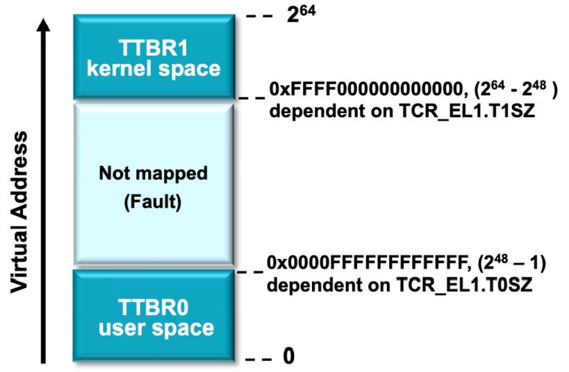
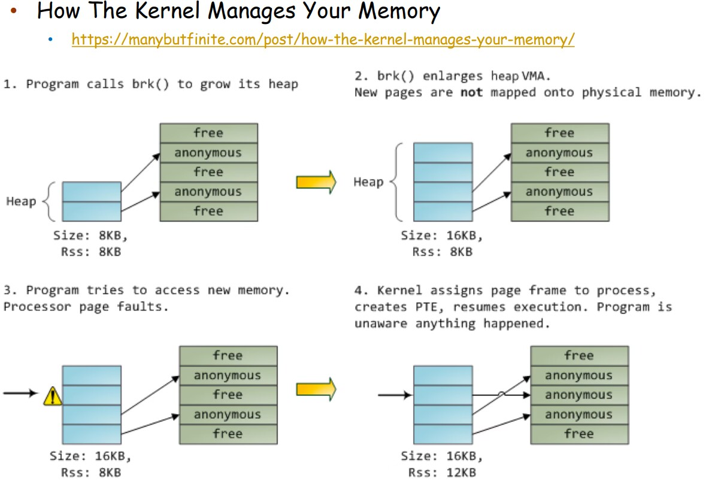
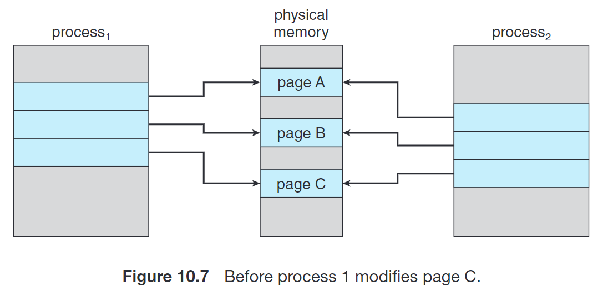
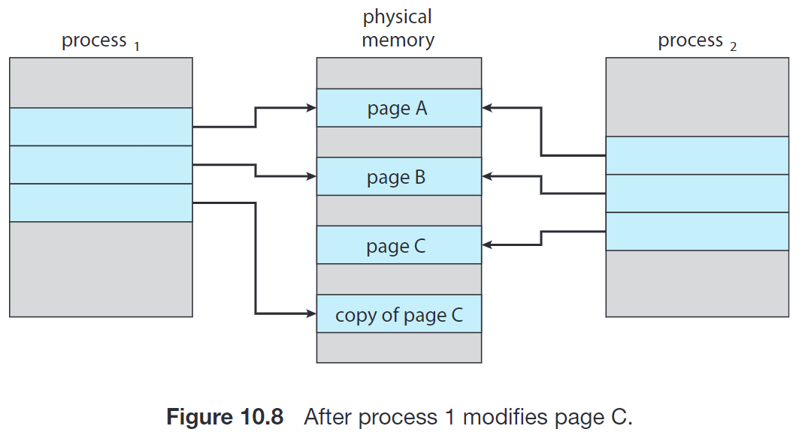
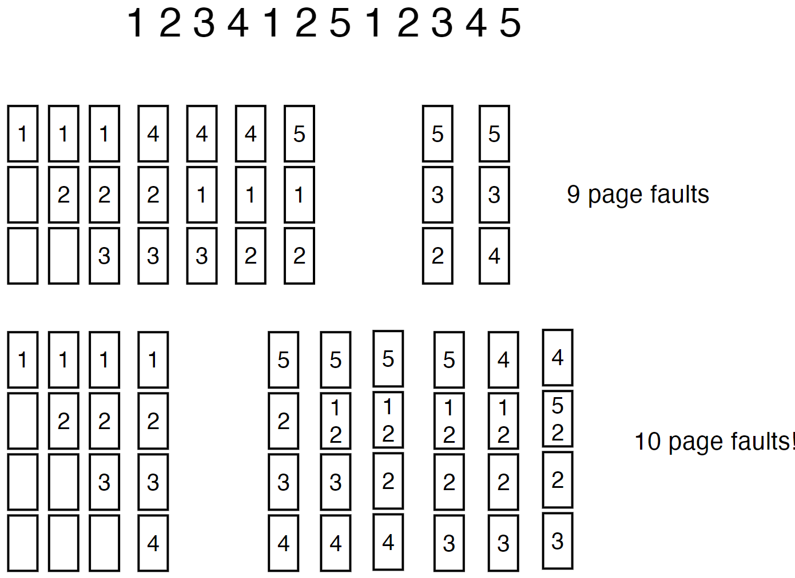
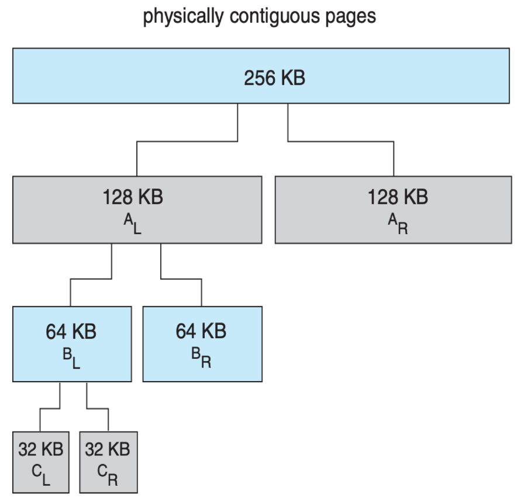

DECK: CS::OS
地址空间与异常
地址空间 (address space) 指的是地址取值的全集。
- 物理地址空间
- 例如，对于一个 32 位寻址的体系结构，其 物理地址空间（物理地址的集合）就是 ，亦即
0x00000000 ~ 0xffffffff。
- flat memory内存模型: 在引入分段 / 分页技术之前，各个进程和操作系统共同使用同一个物理地址空间。它会带来比较大的碎片，同时隔离性较差，内存的保护较弱。
- 例如，对于一个 32 位寻址的体系结构，其 物理地址空间（物理地址的集合）就是 ，亦即
- 虚拟地址空间
- 而在引入了分段 / 分页技术之后，每个进程都有了自己的一套 logical memory (a.k.a. virtual memory) ，其对应的的地址空间就叫做 逻辑地址空间 (logical address space) 或者 虚拟地址空间 (virtual address space)；而对应的段表 / 页表的作用就是提供从虚拟地址空间到物理地址空间的映射（映射过程中，由于 swapping 机制的存在，也有可能出现 swap 的过程）。
- 我们知道，上述的映射过程由 OS 和 MMU 共同实现，因此进程的虚拟地址空间是被隔离的；只要 MMU 不出现问题以及页表不被篡改（这通常比较困难），其他进程就没有办法访问到这个进程的内存。
- 也就是说，虚拟内存供软件使用，而 CPU 在访问对应的内存地址时会由 MMU 自动转换为对应的物理地址；如果对应的 page 不在物理内存中，就会触发一次 page fault，这是一个 exception。有 3 种可能的情况：
- 当前的进程的页表中并没有这个虚拟地址对应的 page；
- 权限不符，例如试图运行某个权限位是
RW-的 page 中的代码，或者试图写入某个权限位是R-X或R--的 page 中的某个内存单元； - 当前虚拟地址是合法的，但是对应的 page 被 swapped out 了。
- 我们知道，exception 会交由操作系统处理；如果是前两种情况，操作系统应当报错并做相关处理（例如杀掉对应进程）；而如果是后一种情况，操作系统应当将进程阻塞，并将对应的 page 交换回来，调页完成后唤醒进程。
- 在一条指令执行期间，可能触发多次 page fault（指令本身和访问的地址可能都不在物理内存中）。当 page fault 被解决后，指令被重新运行；因此一条指令在真正成功运行之前可能会被尝试运行多次。
Kernel Addresses & Userspace Addresses flashcard
- 每个进程的虚拟地址空间（下简称地址空间、AS）被分为了 Kernel Portion 和 User Portion
- kernel 模式下的代码可以访问这两块空间 [CPU 陷入内核代码，进入高权限，但它依然是在这个进程的上下文中工作]
- user 模式下的代码只能访问 User Portion。
- 每个进程的 AS 的 kernel portion 都映射到了同一块物理内存。原因是显然的：所有进程用到的都是同一套 kernel，因此没必要把 kernel 用的内存（存例如各个进程的页表、各种队列之类的东西）复制好几份。
实现
- 在 32 位虚拟地址空间（4GB）的设计里，kernel 默认使用高 1GB，各个进程的 user portion 使用低 3GB 的虚拟地址空间；通过在 build kernel 之前更改
CONFIG_PAGE_OFFSET可以更改这一分配- 32位系统只使用一套页表
- 对于 64 位虚拟地址空间的设计，由于根本用不了这么多，因此 kernel space 和 user space 被自然分隔开：其中 TTBR (Translation Table Base Register) 保存页表的基地址
- =TTBR0 管理的用户空间 + TTBR1 管理的内核空间。对应两套页表
- TTBR0 是每个进程的页表对应的 TTBR
- TTBR1 是 kernel portion 的页表对应的 TTBR。
分配策略和置换策略的区别
- 延迟分配 和 COW 是在内存充足时优化分配或复制的策略，目的是推迟或避免分配，从而节省内存。
- 页面置换 是在内存不足时（物理帧耗尽）强制释放内存的策略，目的是在资源紧张时保证系统能继续运行。
分配策略
Lazy Allocation / Demand Paging flashcard
操作系统在分配 user space 的内存时，会使用 lazy allocation：
- 当用户程序申请一块内存时，操作系统并不会真的立即在物理内存中分配对应的内存；直到这块内存被真正访问。
- 原理: 很多用户程序申请的内存大小比真正需要使用的通常要大，例如 buffer 等。
- 程序（例如通过
malloc库函数）发现需要更多内存，于是调用brk()系统调用来请求扩大其堆（Heap）的边界。- 此时，虚拟堆大小为 8KB，物理内存占用（Rss - Resident Set Size）也是 8KB。
- 内核响应
brk()请求，仅仅扩大了进程的虚拟内存区域（VMA）。新的页面此时并未映射到任何物理内存。- 进程的虚拟堆大小（Size）增加到 16KB，但其物理内存占用（Rss）仍然是 8KB。内核只是在进程的虚拟地址空间中“画了一块饼”，但没有给它“真正的食物”（物理内存）。
- 程序执行代码，试图第一次读取或写入刚刚申请到的新虚拟内存地址。
- CPU（通过 MMU）在页表中查找该虚拟地址，发现它没有任何对应的物理内存映射。
- 处理器触发一个缺页中断（Page Fault）。这不是一个程序错误，而是一个给内核的信号。
- 内核捕获这个中断，意识到这是一个合法的“按需分页”请求。
- 它从可用的“free”列表中找到一个空闲的物理页帧（Page Frame）。
- 内核将这个物理页帧映射到程序试图访问的虚拟地址。
- 它为此创建或更新页表项（PTE - Page Table Entry）。
- 状态： 物理内存占用（Rss）现在增加到 12KB（假设新分配的页是 4KB）。
Copy-on-Write flashcard
- 很多子进程在
fork()之后立刻调用exec()[创建一个复制的子进程,并且用一个全新的程序(可执行文件)的内容覆盖内核态中父进程的代码、数据、栈和堆.]因此将父进程的地址空间整个复制一份是比较浪费的明明马上就会被覆盖. - Copy-on-Write机制允许父进程和子进程最初使用同一份物理页来进行工作，在任何一个进程需要写入某个共享 frame 时再进行复制。
进一步地，Linux 等操作系统提供了vfork()，进一步优化子进程在fork()之后立刻调用exec()的情形。vfork()并不使用 copy-on-write；调用vfork()之后，父进程会被挂起，子进程使用父进程的地址空间。如果子进程此时修改地址空间中的任何页面，这些修改对父进程都是可见的。
置换策略
Page Replacement flashcard
- 我们在Lazy Allocation或者Copy-on-Write讨论的情况下，或者在 kernel、I/O buffer 之类的情况下,需要从磁盘将页调入内存,会需要空闲的物理帧[需要有一个位置].
- 但是没有空闲的物理帧时应该怎么办呢？我们可以交换出去一整个进程:
- 将一个进程的所有页都写回磁盘（备份存储），释放它占用的所有帧。
- 更常见地，我们找到一个当前不在使用的帧，并释放它。
基本步骤是：
- 但是没有空闲的物理帧时应该怎么办呢？我们可以交换出去一整个进程:
- 找到这个 victim frame；
- 将其内容写回备份存储swap space/disk；
- dirty bit (a.k.a. modify bit) 该位保存对应 frame 是否被修改过；如果没有被修改过,就不用写回
- 调入 Page X： 将进程 P 缺失的 Page 从硬盘（备份存储）调入到刚刚腾出的物理帧 中。
- 修改页表（和 TLB 等）以表示它不在内存中了。
- 将页表中的有效位设置为无效
- 从TLB中删除对应条目
如何确定哪个 frame 应当用来作为 victim frame 呢？我们的核心目标是，降低 page fault 的频率。
如何从磁盘匹配和找回被换出的页面？
被换出的页面总能被系统准确找回，这是因为页表和备份存储（Backing Store）有明确的记录机制。
当下次 CPU 再次请求访问这个已被换出的页面时，步骤如下：
- 触发缺页中断（Page Fault）： CPU 请求访问 Page ，MMU 查阅该进程的页表。页表显示 的 valid-invalid bit 设置为 无效（i），触发 Page Fault，控制权交给 OS 内核。
- 定位 Page ： OS 检查页表中的其他信息（这些信息在页被换出时被记录）
- 页表项： 页表项不再存储帧号，而是存储一个特殊标记，该标记指向 Page 在**备份存储（磁盘）**上的确切位置（例如，交换空间中的块地址）。
- 调页（Paging）：
- OS 执行页面置换流程（找到 Victim Frame）。
- OS 从备份存储中，根据第 2 步记录的地址，将 Page 调入到这个 Victim Frame 中。
- 更新页表： Page 被调入后，OS 更新页表，将该页的
valid-invalid bit设置为有效（v），并记录它现在所处的物理帧号。- 指令重执行： OS 将控制权交还给 CPU，让 CPU 重新执行被中断的那条指令。
页面置换算法 (page replacement algorithms) flashcard
Optimal
这种算法选择 最长时间内不再被访问的页面 换出。容易证明，这种方案的 page-fault rate 是最低的。不过，由于实际实现中我们没有办法预测结果，因此它只作为理论最优解用来判定其他算法的优劣。
FIFO (First In First Out)
这种算法换出 最先进入内存的页面。实现比较简单，使用一个队列保存调入内存的顺序即可。
这种算法的问题是，其逻辑和实际不符；实际情况下有很多页面会经常被访问。
另外，这种算法可能会遇到物理帧增加的时候 page-fault 反而更多的异常情况。这被称为 Belady’s Anomaly：
- 123412512345是一次请求访问的页面号
- 上半部分:限制进程只能使用 3 个帧。
- 关键页 A 可能会在它再次被访问之前就被淘汰了（FIFO 逻辑）。
- 下半部分:限制进程可以使用 4 个帧。
- 由于内存变大，关键页 A 驻留的时间变长了。但与此同时，它占用的位置可能会导致另一个很快就要被用到的更关键的页 B 被提前淘汰，从而导致总体缺页次数增加

- 由于内存变大，关键页 A 驻留的时间变长了。但与此同时，它占用的位置可能会导致另一个很快就要被用到的更关键的页 B 被提前淘汰，从而导致总体缺页次数增加
- 上半部分:限制进程只能使用 3 个帧。
LRU (Least Recently Used)
- 实现的一种策略是给每个页表项一个 counter，每次访问某个 page 时，将 counter 更新为当前的时间[只要被用了,就会往后调,从淘汰最早变成了淘汰间隔最长]
- 每次需要置换时，搜索 counter 最小的页。也可以用 heap 来优化。
- 另一种策略是用一个栈保存 page numbers，每次访问时找到它然后把它挪到栈顶。
这两种实现开销都比较大。
LRU-Approximation
- 因此，我们在 LRU 和性能之间做一个折中；引入一个 reference bit，来近似地实现 LRU。当一个 page 被访问时这个 bit 被置为 1；操作系统定期将 reference bit 清零。因此，在需要交换时，只需要找一个 reference bit 为 0 的就可以说明它在这段时间内没有被访问过。
- 或者加上优先级bit
- 加上counting bit 记录被访问的次数
进阶策略
Allocation of Frames
为什么要分配frame
-
采取 全局置换 (global replacement)
- 当进程 A 发生缺页中断需要一个新的帧时，操作系统可以从所有物理帧中（即系统中所有进程 P1, P2, P3… 占用的帧）中选取一个 Victim Frame[灵活:更好的系统吞吐量但是不隔离:自己的pagefault率会取决于其他进程的运行状况]
- 那么我们就不一定有必要提前规定每个进程最多能够使用多少个 frame；
-
采取 局部替换 (local replacement)[隔离但僵化]
- 只在当前进程分配到的物理帧中进行替换
- 那么我们就需要提前把物理 frame 的资源分配给各个进程[要划分好区间不然就跟全局置换一样了]。
-
当我们需要决定一个进程能够使用的页面总数时，我们在上述最小和最大的区间内有非常多的选择，这就引入了分配算法。常见的分配算法包括平均分配，或者按进程对内存的实际需求按比例分配；也可以参考进程的优先级，高优先级相对分配到的更多，或者更能满足其实际需求。
-
现在的很多计算机都有多个 CPU，而每个 CPU 都可以比其他 CPU 更快地访问内存的某些部分。如果这种差异比较明显，我们称这种系统为 非均匀内存访问 (NUMA, Non-Uniform Memory Access) 系统。在这种系统下，为了更好的性能表现，前述的分配和调页算法可能更加复杂。
分配多少个 Frames
给每个进程分配多少个 frame 呢？
- 最大值不可能超过物理内存包含的 frame 总数
- 最小值是由具体的计算机架构决定的。[作系统只需要确保在执行任意一条指令时，该进程拥有足够的帧来容纳该指令涉及的所有页。因此最小值是最复杂的那条指令的帧]
- 指令在解决其涉及的全部 page fault 之后才能真正被运行[指令是原子操作,如果发生pagefault,cpu会暂停当前指令并进行中断处理]
- 因此每个进程分配的 frame 的最小值不应小于单个指令可能使用到的 frame 总数[允许指令运行,是最低要求,还会有其他帧来存储整个进程的代码\全局变量\堆\栈等等]。一般情况如下
- 指令本身:1个page[指令会进行对齐]
- 两个访问内存的操作数，其中每个操作数访问的内存[可能]跨越 2 个 page（即，这块数据在一个 page 的末尾和下一个 page 的开头）
- 那么这个架构上运行的进程的 minimum frame number 是 5。
Thrashing flashcard
- 如果一个进程可用的帧数量比较少（少于其频繁访问的页面数目），那么它会频繁出现 page fault；同一个 page 可能会被频繁地换入换出，以满足运行的要求。这种高度的页面调度活动成为称为 抖动 (thrashing)；其调页时间甚至会大于执行时间。
- 工作集模型 (working set model) 用来确定一个进程频繁访问的页面，保证这些页面不被换出；需要调页时从剩余的页面进行交换。如果频繁访问的页面数已经大于了当前进程可用的页面数，操作系统就应当把整个进程换出，以防止出现抖动现象。
Kernel Memory Allocation
- Kernel 中的很多数据结构大小区分比较大，其中很多小于甚至远小于一个 page.因此，kernel 的设计应当尽可能节省内存，努力减少碎片。
- 尽可能减小 kernel 内存开销的考虑是：
- 一方面，kernel 有可能有一部分常驻在物理内存中，不受调页系统的控制
- 另一方面，有的硬件设备可能和物理内存直接交互，因此可能会需要连续的物理内存。
- 这两者对物理内存的要求都比较严格，因此我们应当尽可能减小这些开销。
Buddy System flashcard
- Buddy system 从物理连续的段上分配内存；每次分配内存大小是 2 的幂次方，例如请求是 11KB，则分配 16KB。
- 当分配时，从物理段上切分出对应的大小，例如下图体现了分配 21KB 时的情况， 会被分配。
当它被释放时，会 合并 (coalesce) 相邻的块形成更大的块供之后使用。
Slab Allocation flashcard
核心的原理是，操作系统中很多 object 的大小是已知且固定的[PCB/socket buffers/PTE之类的]。内存被划分成若干个固定大小的块，每个块都被分配给一个具体的类型。当进程需要分配内存时，它会查询缓存，如果找到一个空闲的块，就直接使用该块；如果缓存中没有空闲的块，就会从系统内存中申请一个新的块：